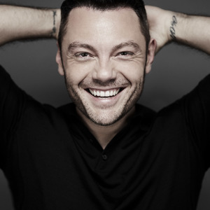

Música italiana pelo mundo
Tiziano Ferro
Nascido na cidade de Latina, na Itália, Tiziano Ferro é um dos principais cantores de música pop italiana da atualidade. Tudo começou na infância, quando decidiu estudar piano, guitarra, bateria e arriscar algumas composições. Mesmo com os interesses musicais, o artista fez faculdade de Engenharia e Ciências da Comunicação e, mais tarde, optou por seguir uma carreira artística. Em 2001, Tiziano foi contratado pela gravadora EMI e, em junho do mesmo ano lançou Xdono, seu primeiro single. Após alguns meses, Rosso Relativo, seu disco de estreia chegou às lojas e logo alcançou o 8º lugar em venda e se manteve por sete meses entre os 10 mais vendidos. O material recebeu disco triplo de platina pela venda de mais de 300.000 cópias. Com o sucesso, a carreira de Tiziano deslanchou. O italiano lançou seu segundo álbum, nomeado 111 (Centoundici) - 111 - Ciento once em 2003. Este disco teve grande êxito com “Sere Nere” como a canção mais ouvida na Itália durante o ano 2004. O sucesso mundial veio em 2006 com Nessuno È Solo que vendeu milhões de cópias ao redor do planeta Em novembro de 2008, lançou seu quarto álbum, intitulado Alla Mia Età, tendo como primeiro single a música homônima, já a versão em espanhol A mi edad foi lançada em fevereiro de 2009 no México e em maio de 2009 na Espanha. Considerado um cantor de música italiana tradicional, em dezembro de 2016 lançou seu sexto disco de estúdio, nomeado Il Mestiere Della Vita, com uma turnê de divulgação. Ao todo, 460 mil pessoas estiveram presente nos 13 shows da Il Mestiere Della Vita Tour, que passou por grandes estádios de cidades italianas.